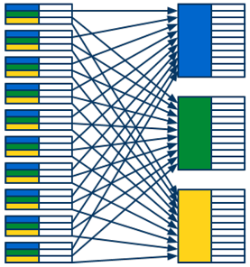

Agenda
- Other GAE Topics
- Modules
- MapReduce & GAE MapReduce API
- Google Cloud Endpoints
- Organizational
- Discussion on HWs.
- Concluding remarks
Other GAE Services
What else can be done with GAE
Modules
- doc
- Decomposition of GAE App
- Separate source code, configuration (security, libraries, versioning, ...), and URL
- One 'default' - handles web requests
- Multiple running instances -> different scaling options
- Stateful services (e.g., Memcache, Datastore, and Task Queues) are shared by all the modules in an application

Modules: Scaling
- Manual
- long-running task with complex initialization, maintaining memory state
- fixed number of instances
- explicit URL:
http://instance.version.module.app_id.appspot.com
- Basic
- creates an instance based on requests
- max instance limit
- no finish deadline (long-running requests), idle timeout
- explicit URL as previous
- Automatic
- original GAE scaling
- creates instances based on request rate, response latencies
- min/max idle instances
- min/max pending latency
- max concurrent requests (max 80!)
Modules: Config
application: simple-sample module: backend version: uno runtime: python27 instance_class: B8 manual_scaling: instances: 5
application: simple-sample module: mobile-frontend ... automatic_scaling: min_idle_instances: 2 max_pending_latency: 1s
Modules: Communication
- Explicit requests
- validation of requests (AppIdentity, OAuth, GAE admin status)
import urllib2 from google.appengine.api import modules url = "http://%s/" % modules.get_hostname(module="my-backend") try: result = urllib2.urlopen(url) doSomethingWithResult(result) except urllib2.URLError, e: handleError(e)
Modules: Communication II
from google.appengine.api import taskqueue
# ...
def post(self):
payload = self.request.get('payload')
# Add the task to the default queue.
taskqueue.add(url='/path/to/my/handler/', params={'payload': payload},
target='my-version.my-module')
Modules: Communication III
# one module
from google.appengine.api import taskqueue
q = taskqueue.Queue('pull-queue')
tasks = []
payload_str = 'hello world'
tasks.append(taskqueue.Task(payload=payload_str, method='PULL'))
q.add(tasks)
# another module
from google.appengine.api import taskqueue
q = taskqueue.Queue('pull-queue')
tasks = q.lease_tasks(3600, 100)
# Perform some work with the tasks here
q.delete_tasks(tasks)
Modules: Routing
dispatch.yaml(doc)
dispatch:
# Default module serves the typical web resources and all static resources.
- url: "*/favicon.ico"
module: default
# Default module serves simple hostname request.
- url: "simple-sample.appspot.com/"
module: default
# Send all mobile traffic to the mobile frontend.
- url: "*/mobile/*"
module: mobile-frontend
# Send all work to the one static backend.
- url: "*/work/*"
module: static-backend
MapReduce
- wiki, paper
- Computing model for processing of large data sets
- Distributed, parallel, scalable, ...
- Robust
- Based on functional programming (restarts almost always possible)
- General framework for implementing parallel processing
- Goal: Process as much data as possible, as fast as possible
- Used in a lot of Google (and other) products
- Idea:
- Select and read in parallel the data to be processed
- Group the data, that should be processed together
- Process the groups of the data belonging together in parallel
MapReduce Overview

MR Phase 1: Read

- Reads data from storage and passes it to the next phase
- Can run in parallel
- Various forms of input data
- GAE Datastore entities
- Files on a file system
- Entries from a zip archive
- ...
- No user code
MR Phase 2: Map

- Filters and maps raw data input to a list of key-value pairs
- Indicates which values should be processed together
- By assigning the same keys
Map(data) -> list(key, value)- User code
- Runs (in isolation) once per each piece of input data
- Highly parallelizeable
- Can exploit data locality
- Local data are passed to local mapper tasks
- Can be scaled
- By increasing the number of parallel mapper tasks
- Usualy produces huge amounts of key-value pairs
MR Phase 3: Shuffle

- Groups the values that should be processed together
- Based on the same keys of the key-value pairs
- Complicated to parallelize
- Includes sorting
- Huge sets of key-value pairs from map phase
Shuffle(list(key, value)) -> list(key, list(value))- No user code
MR Phase 4: Reduce

- Produces final output by processing corresponding values
- Values of the key-value pairs with the same key are processed together
- The lists of corresponding values might be pretty long
Reduce(key, list(value)) -> list(value)- User code
- Usually includes most of the computation
- Runs (in isolation) once per each group of data with the same key
- Easily parallelizeable
- Different (coarser) granularity than map phase
- Can be scaled
- By increasing the number of parallel reduce tasks
MR Phase 5: Write

- Aggregates and stores the outputs produced in the reduce phase
- Has to serialized to some extent
- Various output formats
- GAE Datastore entities
- Files on a file system
- ...
- No user code
MapReduce Summary
MR Hello World — Word Count
#Map
def map(line):
for w in clean(line).split():
yield (w, "")
# Reduce
def reduce(key, values):
yield (key, len(values))
#Input
"Zed's dead, baby, Zed's dead!"
#Map
("zed's", ""), ("dead", ""), ("baby", ""), ("zed's", ""), ("dead", "")
#Shuffle
("zed's", ["", ""]), ("dead", ["", ""]), ("baby", [""])
#Reduce
("zed's", 2), ("dead", 2), ("baby", 1)
MR Example — Distinguishing phrases
# Map
def map(text, filename):
for phrase in phrases(text):
yield (phrase, filename)
# Reduce
def reduce(phrase, filenames):
#not very frequent phrase, ignore
if len(filenames) < 10:
return
#count occurence of the phrase in each of the files
for filename, count in count_occurences(filenames):
#phrase occurs in 'filename' more often than anywhere else combined
if count > len(values) / 2:
yield (key, filename)
MapReduce on GAE
- doc, sources, demo app, demo app sources, Google IO 2011, Google IO 2012
- Problems of running the general MapReduce on GAE
- Performance isolation
- A lot of MRs will be running at the same time
- One user's MR shouldn't influence performance of other users' MRs
- Originally — only a few MRs running concurrently
- Process rate limiting
- App must not to spend resources to quickly
- Quota management is critical for some apps
- Originally — as fast as possible, as much data as possible
- Security
- Originally — only 'trusted' MRs
- Performance isolation
GAE MapReduce Features
- Processing rate limiting
- Automatic sharding
- Predefined standard data input readers/writers
- Datastore entities, Cloud Storage, Log store, blobstore plain/zip files
- Pipeline API
- Wires all MR phases together
- Generic API for asynchronous data processing (goes well with custom modules)
- sources, Google IO 2011, Google IO 2012
- Status and management pages
- Open source — get involved!
GAE MapReduce Pipeline Overview
GAE MR API — Pipeline Definition
from mapreduce import base_handler
from mapreduce import mapreduce_pipeline
class WordCountPipeline(base_handler.PipelineBase):
def run(self, filekey, blobkey):
logging.debug("filename is %s" % filekey)
output = yield mapreduce_pipeline.MapreducePipeline(
"word_count",
"main.word_count_map", #user code
"main.word_count_reduce", #user code
"mapreduce.input_readers.BlobstoreZipInputReader",
"mapreduce.output_writers.FileOutputWriter",
mapper_params={
"input_reader": { # input reader params
"blob_key": blobkey,
},
},
reducer_params={
"output_writer": { # output writer params
"mime_type": "text/plain",
"output_sharding": "input",
"filesystem": "blobstore",
},
},
shards=16)
yield StoreOutput("WordCount", filekey, output)
GAE MR API — Start & Status
from mapreduce import mapreduce_pipeline
class StartAndStatusHandler(webapp2.RequestHandler):
def post(self):
filekey = self.request.get("filekey")
blob_key = self.request.get("blobkey")
if self.request.get("word_count"):
pipeline = WordCountPipeline(filekey, blob_key)
pipeline.with_params(target="my-version.my-module")
pipeline.start()
self.redirect(pipeline.base_path + "/status?root=" + pipeline.pipeline_id)
class WaitHandler(webapp2.RequestHandler):
def get(self):
pipeline_id = self.request.get('pipeline')
pipeline = mapreduce_pipeline.MapreducePipeline.from_id(pipeline_id)
if pipeline.has_finalized:
# MapreducePipeline has completed
else:
# MapreducePipeline is still running
GAE MR API — App Configuration
app.yaml
... includes: - mapreduce/include.yaml ...
- Declarative definition of MR pipelines in
mapreduce.yaml(doc)- Work in progress
- Docs for mapper part only
GAE MapReduce API Demo
Google Cloud Endpoints: API definition
@endpoints.api(name='yourApi',version='v1',
description='Tic Tac Toe API')
class TicTacToeApi(remote.Service):
...
class YourResponseMessageClass(messages.Message):
message = messages.StringField(1)
class YourRequestMessageClass(messages.Message):
message = messages.StringField(1)
@endpoints.method(YourRequestMessageClass,
YourResponseMessageClass,
name='foo.bar', ...)
def bar(self, request):
...
Google Cloud Endpoints: Server side
services.py
import endpoints import TicTacToeApi application = endpoints.api_server([TicTacToeApi])
app.yaml
... handlers: # Endpoints handler - url: /_ah/spi/.* script: services.application ... libraries: - name: endpoints version: 1.0
- Explore at
/_ah/api/explorer
Further Reading
- Google I/O 2012 - Optimizing Your Google App Engine App
- Google I/O 2013 - Building developers.google.com on App Engine
- Google I/O 2012
- Big Query (GCPLive 2014, Google I/O 2012 talk), (doc), (tutorial)
- Google Compute Engine (doc)
- Google Cloud SQL (doc)
Organizational
Homeworks
- Homework submissions accepted till 8.6.2016
Evaluation
- Should use at least 2 of the advanced datastore-based features
- Transactions, consistency, sharding, cursors, special types of queries, asynchronous operations
- Should use at least 2 service APIs
- Memcache, Task Queues, Blobstore, Channels, Endpoints, BigQuery, ...
- Send a description via email for confirmation
- Work in groups preferred
- Don't worry
Discussion
- What problem/domain did you choose?
- What was interesting?
- What services did you use?
Conclusion & Discussion
This course was a mere "door opening", rather than a fully-fledged lecture.
Please help us make it better!
- Did you find the course useful?
- What was (not) interesting?
- What would (wouldn't) you like to know more about?
- What did you learn during lectures/homeworks?
- Would you consider using GAE in the future?
For offline discussion: vinarek@d3s.mff.cuni.cz
Thank You!